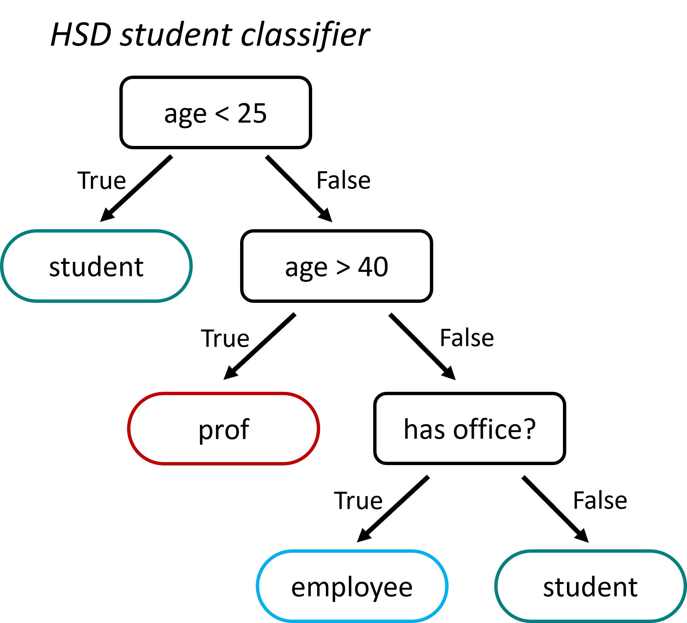
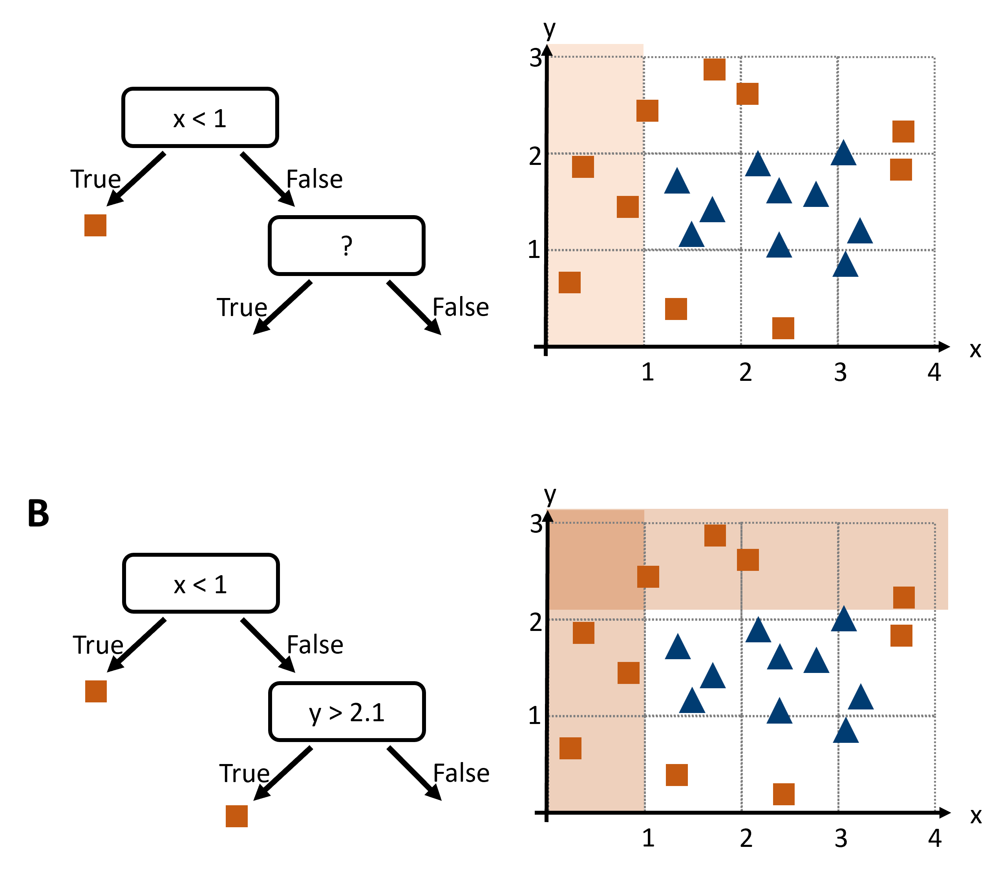
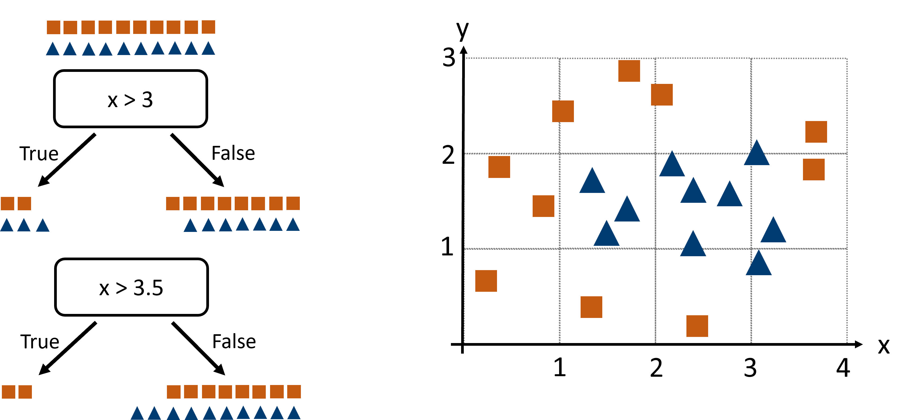
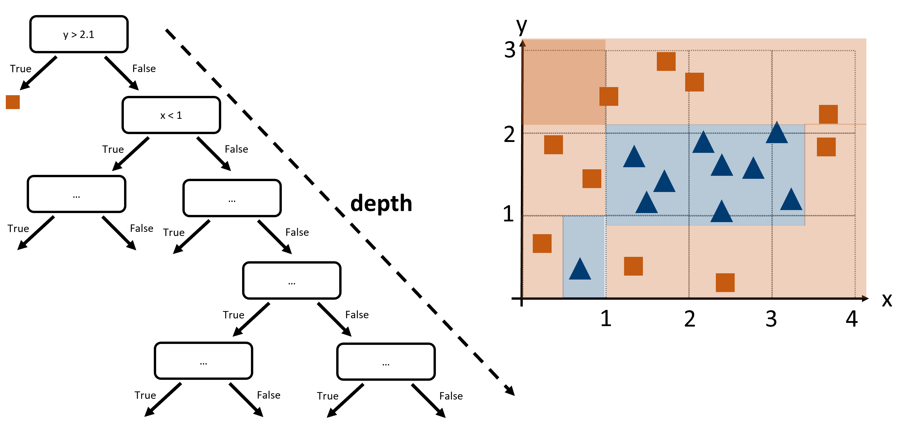
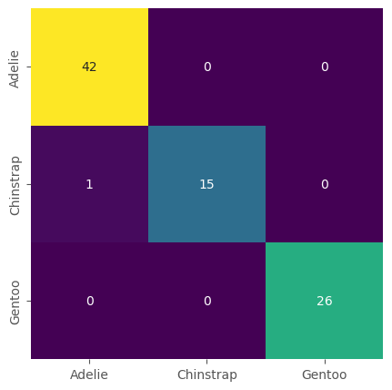
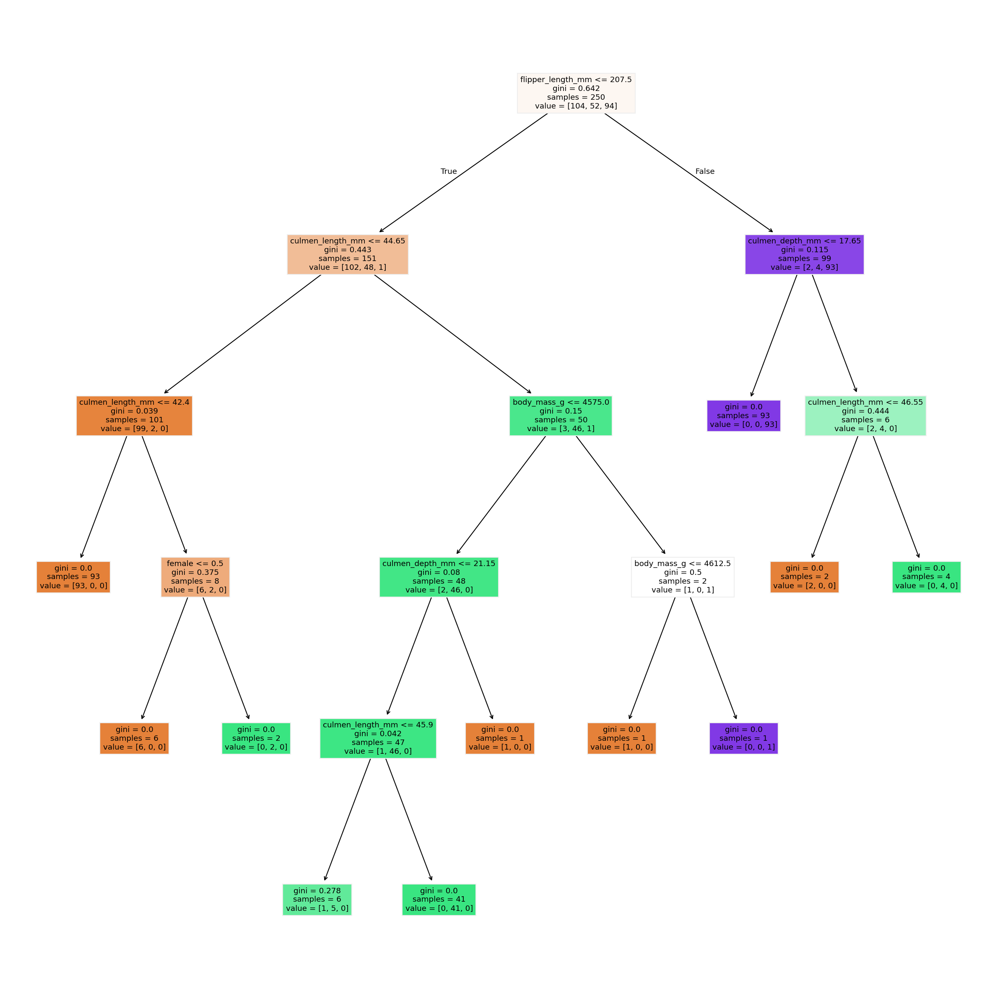

Common Algorithms III - Decision Trees#
Decision Trees are intuitive and easily interpretable models that mimic human decision-making processes. They work by partitioning the data into subsets that contain instances with similar values. This is done through a series of questions that segment the data based on feature values, ultimately leading to a decision at each leaf node. A simple example is shown in Fig. 28.

Fig. 28 Decision trees are very intuitive to understand, but also to create! They can, in principle, both be designed and used manually. This sketch shows a very basic student classifier supposed to distinguish professors, employees, and students on campus. Admittedly, it will perform rather poorly, but you’ll get the idea.#
Building a Decision Tree#
How can we build a decision tree, say to distinguish red squares from blue triangles in Fig. 29?

Fig. 29 To design a decision tree we could search for suitable decision boundaries that separate one species from the others (if the task is classification). After a first step (A), we will iteratively continue to B and further.#
That seems to work OK. But how could we automate this? What could be a good algorithm to find good decision boundaries for us?
Automated Decision Tree Construction#
To automate the construction of a decision tree, we need an algorithm that can systematically find the best features to split the data. In decision tree construction, we automate this choice by measuring the “impurity” of a node, which measures how mixed the classes are, and then picking the split that drives that impurity down most steeply.
First, the algorithm scans each feature in turn. For a continuous feature, it sorts the unique values and considers splits at midpoints between successive values. For a categorical feature, it examines sensible partitions of categories (or uses heuristics to limit the search). Each candidate split divides the parent node into two child nodes, and we can quickly compute an impurity score for each.
Rather than exhaust every conceivable partition (which can explode combinatorially), modern implementations efficiently consider only candidate thresholds that lie between sorted values, or use greedy heuristics on large category sets. Once all viable splits for all features have been scored, the algorithm picks the one with the greatest reduction in impurity, carves the data apart, and then repeats this process recursively on each child node until a stopping rule applies—say, a maximum tree depth, a minimum number of samples in a node, or when nodes become perfectly pure.
Gini Index#
There are various options to quantify disorder. Commonly used in decision trees are entropy or the Gini index. We will here use the Gini index which often feels more intuitive: it measures the probability of misclassifying a randomly chosen instance if you assign its label by randomly sampling the node’s class distribution.
Formally, if a node contains K classes and the proportion of class \(i\) is \(p_i\), the Gini index is
When evaluating a split, we compute the Gini of the parent node, then the Gini of each child, and finally the weighted average of those child Gini scores. The drop from parent to children—the Gini gain—is exactly:
where \(n_L\) and \(n_R\) are the sample counts in the left and right child, so the left and right branch of the current tree node. The algorithm chooses the split that maximizes this gain, steering each branch toward ever-greater homogeneity.
A Concrete Illustration#
Suppose our root node holds 20 shapes—10 squares and 10 triangles—so each class has proportion 0.5.

Fig. 30 We here compare two possible splits (x > 3 or x > 3.5) to decide which one is better based on the Gini index.#
The Gini index at the beginning (in the “parent” node) is
Consider two candidate splits on feature x:
• Split A: x > 3. The left child contains 5 shapes (2 squares, 3 triangles), so \(p_{square}=\frac{2}{5}\) and
and the right child holds 15 shapes (8 squares, 7 triangles), \(p_{square}=\frac{8}{15}\), yielding
The weighted sum of both \(Gini_L\) and \(Gini_R\) after Split A is
and the Gini gain is \(\Delta G = G_{parent} - G_A = 0.5 − 0.493 = 0.007\).
• Split B: x > 3.5. Now the left side has 2 shapes (both squares), so \(Gini_L = 0\); the right side has 18 shapes (8 squares, 10 triangles), so
and the weighted sum:
giving a Gini gain of \(\Delta G = G_{parent} - G_B = 0.5 − 0.444 = 0.056\).
Clearly Split B yields a bigger impurity drop, so it’s the winner.
Putting It All Together#
The decision tree algorithm can be imagined as follows. At each step, the tree-growing algorithm does:
Scans each feature’s candidate thresholds or category partitions,
Computes parent and child Gini indices, then gini gain,
Chooses the split with the largest gain,
Repeats on new nodes until stopping criteria apply.
The most important stopping criteria are:
The reached node only contains datapoints of one sort (so in our example: only squares or triangles)
The reached node reaches a set minimum size (in Scikit-Learn the
min_samples_leafparameter)The tree reaches a set maximum depth (in Scikit-Learn the
max_depthparameter)
Advantages and Disadvantages of Decision Trees#

Fig. 31 Decision trees come with several possible shortcomings. When their depth is not limited they have a high risk of overfitting on the training data because they can in principle separate each data point and thereby memorize training data.#
Pros:
Interpretability: Decision trees are easy to understand and visualize, making them useful for communicating results.
Versatility: They can handle both numerical and categorical data without needing feature scaling.
Non-linear Relationships: Capable of capturing complex decision boundaries.
Cons:
Overfitting: Decision trees can easily become too complex and overfit the training data, especially if they are very deep.
Instability: Small changes in the data can result in completely different trees.
Bias: They can be biased towards dominant classes in imbalanced datasets.
Hands-on Example#
We here again work with the Penguin Dataset [Horst et al., 2020], now again to predict the species.
import os
import pandas as pd
import numpy as np
from matplotlib import pyplot as plt
import seaborn as sb
# Set the ggplot style
plt.style.use("ggplot")
Data Inspection & Cleaning#
# The "classical" penguins dataset, but with some additional changes
filename = "../datasets/penguins_size.csv"
# or: filename = r"https://raw.githubusercontent.com/florian-huber/data_science_course/refs/heads/main/datasets/penguins_size.csv"
data = pd.read_csv(filename)
data = data.dropna()
label_name = "species"
y = data[label_name]
X = data.drop(["species", "island"], axis=1)
X["sex"] = 1 * pd.get_dummies(X["sex"])["FEMALE"]
X = X.rename(columns={"sex": "female"})
X.head()
| culmen_length_mm | culmen_depth_mm | flipper_length_mm | body_mass_g | female | |
|---|---|---|---|---|---|
| 0 | 39.1 | 18.7 | 181.0 | 3750.0 | 0 |
| 1 | 39.5 | 17.4 | 186.0 | 3800.0 | 1 |
| 2 | 40.3 | 18.0 | 195.0 | 3250.0 | 1 |
| 4 | 36.7 | 19.3 | 193.0 | 3450.0 | 1 |
| 5 | 39.3 | 20.6 | 190.0 | 3650.0 | 0 |
Train/Test split#
As done before, we will simply split the data into a training set and a test set.
from sklearn.model_selection import train_test_split
# Train-test split
X_train, X_test, y_train, y_test = train_test_split(X, y, test_size=0.25, random_state=0)
# Let's check the outcome dimensions
X_train.shape, X_test.shape, y_train.shape, y_test.shape
((250, 5), (84, 5), (250,), (84,))
Train a model (and make predictions)#
from sklearn.tree import DecisionTreeClassifier
tree = DecisionTreeClassifier(max_depth=5, random_state=0)
tree.fit(X_train, y_train)
DecisionTreeClassifier(max_depth=5, random_state=0)In a Jupyter environment, please rerun this cell to show the HTML representation or trust the notebook.
On GitHub, the HTML representation is unable to render, please try loading this page with nbviewer.org.
Parameters
Compute predictions
Just as before with the k-NN model, we can simply create predictions on any data of the expected size (here: 4 features).
predictions = tree.predict(X_test)
predictions
array(['Chinstrap', 'Adelie', 'Adelie', 'Gentoo', 'Chinstrap', 'Gentoo',
'Chinstrap', 'Adelie', 'Adelie', 'Gentoo', 'Adelie', 'Adelie',
'Adelie', 'Adelie', 'Adelie', 'Adelie', 'Adelie', 'Gentoo',
'Chinstrap', 'Adelie', 'Adelie', 'Adelie', 'Gentoo', 'Gentoo',
'Gentoo', 'Gentoo', 'Gentoo', 'Gentoo', 'Adelie', 'Adelie',
'Chinstrap', 'Adelie', 'Chinstrap', 'Adelie', 'Gentoo', 'Adelie',
'Adelie', 'Adelie', 'Gentoo', 'Adelie', 'Chinstrap', 'Adelie',
'Gentoo', 'Gentoo', 'Chinstrap', 'Gentoo', 'Adelie', 'Gentoo',
'Adelie', 'Adelie', 'Adelie', 'Adelie', 'Gentoo', 'Adelie',
'Gentoo', 'Adelie', 'Adelie', 'Adelie', 'Adelie', 'Gentoo',
'Adelie', 'Gentoo', 'Adelie', 'Gentoo', 'Adelie', 'Adelie',
'Adelie', 'Chinstrap', 'Adelie', 'Adelie', 'Chinstrap',
'Chinstrap', 'Chinstrap', 'Chinstrap', 'Gentoo', 'Gentoo',
'Adelie', 'Gentoo', 'Adelie', 'Chinstrap', 'Adelie', 'Gentoo',
'Gentoo', 'Chinstrap'], dtype=object)
Model evaluation#
Precisely as we did for the kNN model we can now evaluate the model using our test set and by computing the confusion matrix.
from sklearn.metrics import confusion_matrix
confusion_matrix(y_test, predictions)
array([[42, 0, 0],
[ 1, 15, 0],
[ 0, 0, 26]])
Just as we did for the kNN model we can also plot the confusion matrix.
# or, visually a bit nicer:
fig, ax = plt.subplots(figsize=(5, 5))
sb.heatmap(confusion_matrix(y_test, predictions),
annot=True, cmap="viridis", cbar=False,
xticklabels=tree.classes_,
yticklabels=tree.classes_)
<Axes: >

The best part about trees: look at them!#
The biggest advantage about decision trees is that they are fully interpretable. We can inspect what tree was learned and, at least in theory, could also use this to make predictions manually.
We can inspect the different layers individually, but we can also plot the entire tree.
from sklearn.tree import plot_tree
feature_names = X_train.columns
fig, ax = plt.subplots(figsize=(10, 10), dpi=300)
plot_tree(tree, feature_names=feature_names, filled=True)
plt.show()
